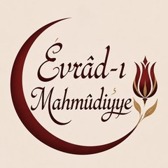

İçeriğe geç
Bu sitenin çalışabilmesi için tarayıcınızda JavaScript'in açık olması gerekir.

Evrâd-ı Mahmûdiyye Külliyâtı
Cübbeli Ahmet Hocaefendi'nin (Sellemehullâh) neşir ve beyânlarından derlenen fazîletli ameller
Gelişmiş Arama
Kelimeyle arayın ya da niyetinizi seçin
Niyet / konu
Bölüm